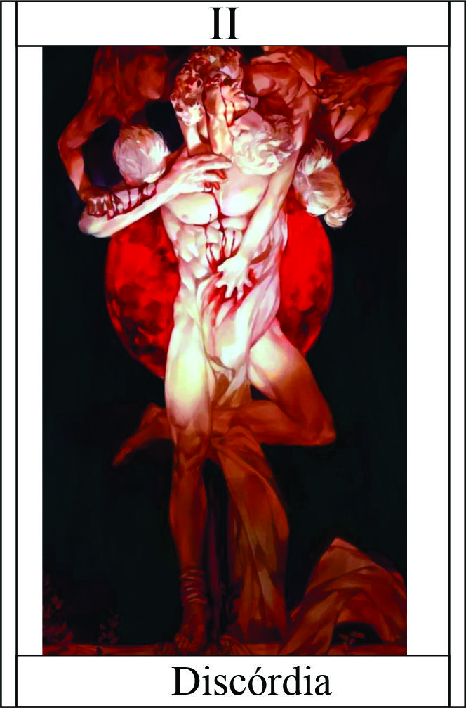

Discordia
Têndencia: Neutro Mal
Passiva - Chama Eterna:
A passiva "Chama Eterna" permite ao personagem canalizar a energia da discórdia em seu interior, aumentando seu poder à medida que a discórdia se intensifica. Quanto mais caos e conflito estiver ao redor do personagem, mais poderoso ele se torna.
Podendo escolher bonificação da batalha | Cada habilidade sua usada com ou sem sucesso ganha ponto do discórdia podendo ganhar essas bonificações:
- Dano Adicional: +1 | limite 20
- Esquiva: +1 | limite 2
- Acerto: +1 | limite 2
Legado 1 - Aura Disruptiva:
Ao ativar a habilidade "Aura Disruptiva", o personagem emana uma aura de discórdia e caos ao seu redor. Essa aura afeta os inimigos próximos, perturbando sua concentração e criando desordem em suas habilidades e estratégias. Os inimigos afetados pela aura podem sofrer redução de dano, perda de precisão ou até mesmo erros em suas ações.
Teste de dificuldade para concetração | Dano reduzido 50% | Acerto - 2 | Ataques sem sentidos (se inimigo falhar no teste)
O personagem precisa estar cercado por pelo menos três inimigos diferentes.
Legado 2 - Dispersão Caótica:
Ao ativar a habilidade "Dispersão Caótica", o personagem cria uma onda de energia disruptiva que se espalha rapidamente pelo campo de batalha, quebrando a coesão e a estratégia dos inimigos. Essa onda causa confusão e desorientação, desencadeando conflitos internos entre os inimigos e fazendo com que eles se ataquem uns aos outros.
Alvo ficará com marca Dispersão Caótica por 5 round | Erros criticos e Falhas de resisteicia (Vigor + Auto-Controle) o alvo poderá ataca aliados ou atropeçar | Falha Critica Ação ou Esquiva, ganhará ataque de oportunidade.
A passiva "Chama Eterna" permite que o personagem aumente seu poder à medida que a discórdia se intensifica ao seu redor. As habilidades "Aura Disruptiva" e "Dispersão Caótica" exploram essa temática da discórdia, causando desordem e confusão entre os inimigos, aproveitando-se de sua própria essência para obter vantagem tática durante o combate.
personagem precisa estar enfrentando um grupo de inimigos em formação próxima.